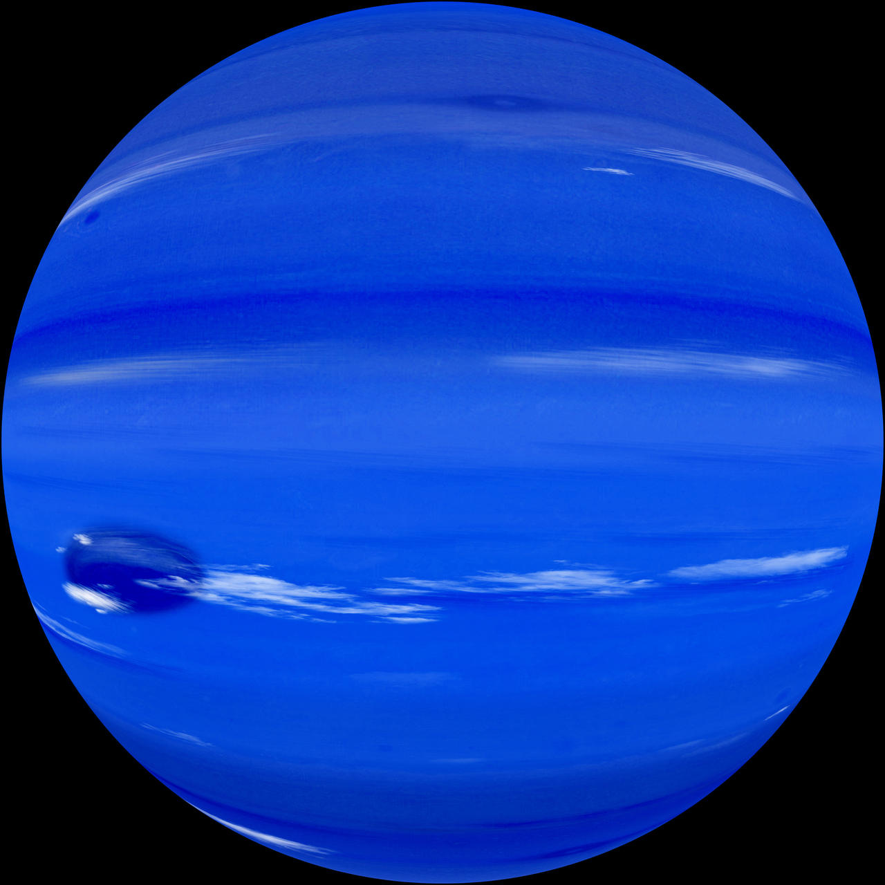

نظرة عامة
نبتون هو الكوكب الثامن والأبعد عن الشمس في النظام الشمسي. يتميز بلونه الأزرق العميق وعواصفه الشديدة التي تصل إلى سرعات فائقة.
خصائص نبتون
- القطر: حوالي 49,244 كم
- مدة اليوم: حوالي 16 ساعة
- مدة السنة: حوالي 165 سنة أرضية
- درجة الحرارة: تصل إلى -214 درجة مئوية
معرض الصور
صورة لكوكب نبتون بلونه الأزرق العميق.